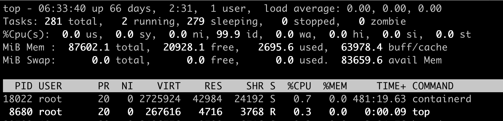
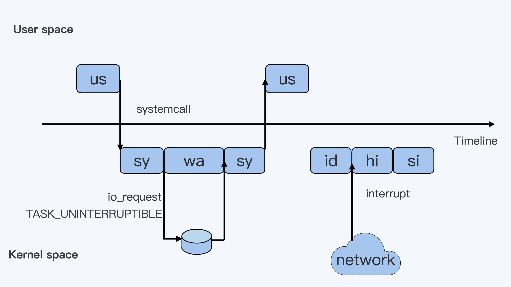
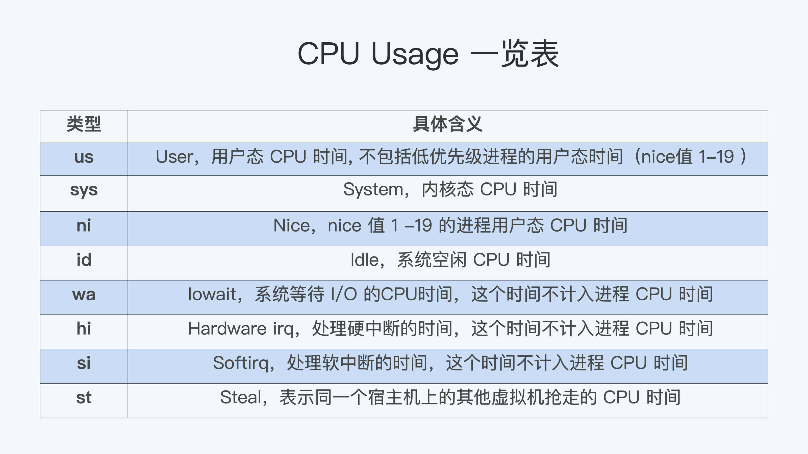
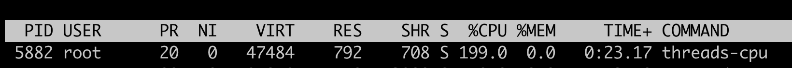
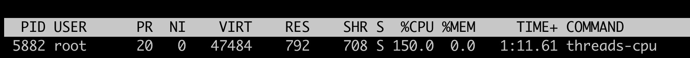
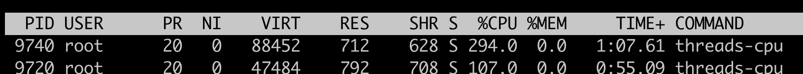

- 00 开篇词 一个态度两个步骤，成为容器实战高手.md.html
- 01 认识容器：容器的基本操作和实现原理.md.html
- 02 理解进程（1）：为什么我在容器中不能kill 1号进程？.md.html
- 03 理解进程（2）：为什么我的容器里有这么多僵尸进程？.md.html
- 04 理解进程（3）：为什么我在容器中的进程被强制杀死了？.md.html
- 05 容器CPU（1）：怎么限制容器的CPU使用？.md.html
- 06 容器CPU（2）：如何正确地拿到容器CPU的开销？.md.html
- 07 Load Average：加了CPU Cgroup限制，为什么我的容器还是很慢？.md.html
- 08 容器内存：我的容器为什么被杀了？.md.html
- 09 Page Cache：为什么我的容器内存使用量总是在临界点.md.html
- 10 Swap：容器可以使用Swap空间吗？.md.html
- 11 容器文件系统：我在容器中读写文件怎么变慢了.md.html
- 12 容器文件Quota：容器为什么把宿主机的磁盘写满了？.md.html
- 13 容器磁盘限速：我的容器里磁盘读写为什么不稳定.md.html
- 14 容器中的内存与IO：容器写文件的延时为什么波动很大？.md.html
- 15 容器网络：我修改了procsysnet下的参数，为什么在容器中不起效？.md.html
- 16 容器网络配置（1）：容器网络不通了要怎么调试.md.html
- 17 容器网络配置（2）：容器网络延时要比宿主机上的高吗.md.html
- 18 容器网络配置（3）：容器中的网络乱序包怎么这么高？.md.html
- 19 容器安全（1）：我的容器真的需要privileged权限吗.md.html
- 20 容器安全（2）：在容器中，我不以root用户来运行程序可以吗？.md.html
- 加餐01 案例分析：怎么解决海量IPVS规则带来的网络延时抖动问题？.md.html
- 加餐02 理解perf：怎么用perf聚焦热点函数？.md.html
- 加餐03 理解ftrace（1）：怎么应用ftrace查看长延时内核函数？.md.html
- 加餐04 理解ftrace（2）：怎么理解ftrace背后的技术tracepoint和kprobe？.md.html
- 加餐05 eBPF：怎么更加深入地查看内核中的函数？.md.html
- 加餐06 BCC：入门eBPF的前端工具.md.html
- 加餐福利 课后思考题答案合集.md.html
- 结束语 跳出舒适区，突破思考的惰性.md.html
05 容器CPU（1）：怎么限制容器的CPU使用？
你好，我是程远。从这一讲开始，我们进入容器 CPU 这个模块。
我在第一讲中给你讲过，容器在 Linux 系统中最核心的两个概念是 Namespace 和 Cgroups。我们可以通过 Cgroups 技术限制资源。这个资源可以分为很多类型，比如 CPU，Memory，Storage，Network 等等。而计算资源是最基本的一种资源，所有的容器都需要这种资源。
那么，今天我们就先聊一聊，怎么限制容器的 CPU 使用？
我们拿 Kubernetes 平台做例子，具体来看下面这个 pod/container 里的 spec 定义，在 CPU 资源相关的定义中有两项内容，分别是 Request CPU 和 Limit CPU。
apiVersion: v1
kind: Pod
metadata:
name: frontend
spec:
containers:
name: app
image: images.my-company.example/app:v4
env:
resources:
requests:
memory: "64Mi"
cpu: "1"
limits:
memory: "128Mi"
cpu: "2"
…
很多刚刚使用 Kubernetes 的同学，可能一开始并不理解这两个参数有什么作用。
这里我先给你说结论，在 Pod Spec 里的"Request CPU"和"Limit CPU"的值，最后会通过 CPU Cgroup 的配置，来实现控制容器 CPU 资源的作用。
那接下来我会先从进程的 CPU 使用讲起，然后带你在 CPU Cgroup 子系统中建立几个控制组，用这个例子为你讲解 CPU Cgroup 中的三个最重要的参数"cpu.cfs_quota_us""cpu.cfs_period_us""cpu.shares"。
相信理解了这三个参数后，你就会明白我们要怎样限制容器 CPU 的使用了。
如何理解 CPU 使用和 CPU Cgroup？
既然我们需要理解 CPU Cgroup，那么就有必要先来看一下 Linux 里的 CPU 使用的概念，这是因为 CPU Cgroup 最大的作用就是限制 CPU 使用。
CPU 使用的分类
如果你想查看 Linux 系统的 CPU 使用的话，会用什么方法呢？最常用的肯定是运行 Top 了。
我们对照下图的 Top 运行界面，在截图第三行，"%Cpu(s)"开头的这一行，你会看到一串数值，也就是"0.0 us, 0.0 sy, 0.0 ni, 99.9 id, 0.0 wa, 0.0 hi, 0.0 si, 0.0 st"，那么这里的每一项值都是什么含义呢？

下面这张图里最长的带箭头横轴，我们可以把它看成一个时间轴。同时，它的上半部分代表 Linux 用户态（User space），下半部分代表内核态（Kernel space）。这里为了方便你理解，我们先假设只有一个 CPU 吧。

我们可以用上面这张图，把这些值挨个解释一下。
假设一个用户程序开始运行了，那么就对应着第一个"us"框，"us"是"user"的缩写，代表 Linux 的用户态 CPU Usage。普通用户程序代码中，只要不是调用系统调用（System Call），这些代码的指令消耗的 CPU 就都属于"us"。
当这个用户程序代码中调用了系统调用，比如说 read() 去读取一个文件，这时候这个用户进程就会从用户态切换到内核态。
内核态 read() 系统调用在读到真正 disk 上的文件前，就会进行一些文件系统层的操作。那么这些代码指令的消耗就属于"sy"，这里就对应上面图里的第二个框。"sy"是 "system"的缩写，代表内核态 CPU 使用。
接下来，这个 read() 系统调用会向 Linux 的 Block Layer 发出一个 I/O Request，触发一个真正的磁盘读取操作。
这时候，这个进程一般会被置为 TASK_UNINTERRUPTIBLE。而 Linux 会把这段时间标示成"wa"，对应图中的第三个框。"wa"是"iowait"的缩写，代表等待 I/O 的时间，这里的 I/O 是指 Disk I/O。
紧接着，当磁盘返回数据时，进程在内核态拿到数据，这里仍旧是内核态的 CPU 使用中的"sy"，也就是图中的第四个框。
然后，进程再从内核态切换回用户态，在用户态得到文件数据，这里进程又回到用户态的 CPU 使用，"us"，对应图中第五个框。
好，这里我们假设一下，这个用户进程在读取数据之后，没事可做就休眠了。并且我们可以进一步假设，这时在这个 CPU 上也没有其他需要运行的进程了，那么系统就会进入"id"这个步骤，也就是第六个框。"id"是"idle"的缩写，代表系统处于空闲状态。
如果这时这台机器在网络收到一个网络数据包，网卡就会发出一个中断（interrupt）。相应地，CPU 会响应中断，然后进入中断服务程序。
这时，CPU 就会进入"hi"，也就是第七个框。"hi"是"hardware irq"的缩写，代表 CPU 处理硬中断的开销。由于我们的中断服务处理需要关闭中断，所以这个硬中断的时间不能太长。
但是，发生中断后的工作是必须要完成的，如果这些工作比较耗时那怎么办呢？Linux 中有一个软中断的概念（softirq），它可以完成这些耗时比较长的工作。
你可以这样理解这个软中断，从网卡收到数据包的大部分工作，都是通过软中断来处理的。那么，CPU 就会进入到第八个框，"si"。这里"si"是"softirq"的缩写，代表 CPU 处理软中断的开销。
这里你要注意，无论是"hi"还是"si"，它们的 CPU 时间都不会计入进程的 CPU 时间。这是因为本身它们在处理的时候就不属于任何一个进程。
好了，通过这个场景假设，我们介绍了大部分的 Linux CPU 使用。
不过，我们还剩两个类型的 CPU 使用没讲到，我想给你做个补充，一次性带你做个全面了解。这样以后你解决相关问题时，就不会再犹豫，这些值到底影不影响 CPU Cgroup 中的限制了。下面我给你具体讲一下。
一个是"ni"，是"nice"的缩写，这里表示如果进程的 nice 值是正值（1-19），代表优先级比较低的进程运行时所占用的 CPU。
另外一个是"st"，"st"是"steal"的缩写，是在虚拟机里用的一个 CPU 使用类型，表示有多少时间是被同一个宿主机上的其他虚拟机抢走的。
综合前面的内容，我再用表格为你总结一下：

CPU Cgroup
在第一讲中，我们提到过 Cgroups 是对指定进程做计算机资源限制的，CPU Cgroup 是 Cgroups 其中的一个 Cgroups 子系统，它是用来限制进程的 CPU 使用的。
对于进程的 CPU 使用, 通过前面的 Linux CPU 使用分类的介绍，我们知道它只包含两部分: 一个是用户态，这里的用户态包含了 us 和 ni；还有一部分是内核态，也就是 sy。
至于 wa、hi、si，这些 I/O 或者中断相关的 CPU 使用，CPU Cgroup 不会去做限制，那么接下来我们就来看看 CPU Cgoup 是怎么工作的？
每个 Cgroups 子系统都是通过一个虚拟文件系统挂载点的方式，挂到一个缺省的目录下，CPU Cgroup 一般在 Linux 发行版里会放在 /sys/fs/cgroup/cpu 这个目录下。
在这个子系统的目录下，每个控制组（Control Group） 都是一个子目录，各个控制组之间的关系就是一个树状的层级关系（hierarchy）。
比如说，我们在子系统的最顶层开始建立两个控制组（也就是建立两个目录）group1 和 group2，然后再在 group2 的下面再建立两个控制组 group3 和 group4。
这样操作以后，我们就建立了一个树状的控制组层级，你可以参考下面的示意图。

那么我们的每个控制组里，都有哪些 CPU Cgroup 相关的控制信息呢？这里我们需要看一下每个控制组目录中的内容：
# pwd
/sys/fs/cgroup/cpu
# mkdir group1 group2
# cd group2
# mkdir group3 group4
# cd group3
# ls cpu.*
cpu.cfs_period_us cpu.cfs_quota_us cpu.rt_period_us cpu.rt_runtime_us cpu.shares cpu.stat
考虑到在云平台里呢，大部分程序都不是实时调度的进程，而是普通调度（SCHED_NORMAL）类型进程，那什么是普通调度类型呢？
因为普通调度的算法在 Linux 中目前是 CFS （Completely Fair Scheduler，即完全公平调度器）。为了方便你理解，我们就直接来看 CPU Cgroup 和 CFS 相关的参数，一共有三个。
第一个参数是 cpu.cfs_period_us，它是 CFS 算法的一个调度周期，一般它的值是 100000，以 microseconds 为单位，也就 100ms。
第二个参数是 cpu.cfs_quota_us，它“表示 CFS 算法中，在一个调度周期里这个控制组被允许的运行时间，比如这个值为 50000 时，就是 50ms。
如果用这个值去除以调度周期（也就是 cpu.cfs_period_us），50ms/100ms = 0.5，这样这个控制组被允许使用的 CPU 最大配额就是 0.5 个 CPU。
从这里能够看出，cpu.cfs_quota_us 是一个绝对值。如果这个值是 200000，也就是 200ms，那么它除以 period，也就是 200ms/100ms=2。
你看，结果超过了 1 个 CPU，这就意味着这时控制组需要 2 个 CPU 的资源配额。
我们再来看看第三个参数， cpu.shares。这个值是 CPU Cgroup 对于控制组之间的 CPU 分配比例，它的缺省值是 1024。
假设我们前面创建的 group3 中的 cpu.shares 是 1024，而 group4 中的 cpu.shares 是 3072，那么 group3:group4=1:3。
这个比例是什么意思呢？我还是举个具体的例子来说明吧。
在一台 4 个 CPU 的机器上，当 group3 和 group4 都需要 4 个 CPU 的时候，它们实际分配到的 CPU 分别是这样的：group3 是 1 个，group4 是 3 个。
我们刚才讲了 CPU Cgroup 里的三个关键参数，接下来我们就通过几个例子来进一步理解一下，代码你可以在这里找到。
第一个例子，我们启动一个消耗 2 个 CPU（200%）的程序 threads-cpu，然后把这个程序的 pid 加入到 group3 的控制组里：
./threads-cpu/threads-cpu 2 &
echo $! > /sys/fs/cgroup/cpu/group2/group3/cgroup.procs
在我们没有修改 cpu.cfs_quota_us 前，用 top 命令可以看到 threads-cpu 这个进程的 CPU 使用是 199%，近似 2 个 CPU。

然后，我们更新这个控制组里的 cpu.cfs_quota_us，把它设置为 150000（150ms）。把这个值除以 cpu.cfs_period_us，计算过程是 150ms/100ms=1.5, 也就是 1.5 个 CPU，同时我们也把 cpu.shares 设置为 1024。
echo 150000 > /sys/fs/cgroup/cpu/group2/group3/cpu.cfs_quota_us
echo 1024 > /sys/fs/cgroup/cpu/group2/group3/cpu.shares
这时候我们再运行 top，就会发现 threads-cpu 进程的 CPU 使用减小到了 150%。这是因为我们设置的 cpu.cfs_quota_us 起了作用，限制了进程 CPU 的绝对值。
但这时候 cpu.shares 的作用还没有发挥出来，因为 cpu.shares 是几个控制组之间的 CPU 分配比例，而且一定要到整个节点中所有的 CPU 都跑满的时候，它才能发挥作用。

好，下面我们再来运行第二个例子来理解 cpu.shares。我们先把第一个例子里的程序启动，同时按前面的内容，一步步设置好 group3 里 cpu.cfs_quota_us 和 cpu.shares。
设置完成后，我们再启动第二个程序，并且设置好 group4 里的 cpu.cfs_quota_us 和 cpu.shares。
group3：
./threads-cpu/threads-cpu 2 & # 启动一个消耗2个CPU的程序
echo $! > /sys/fs/cgroup/cpu/group2/group3/cgroup.procs #把程序的pid加入到控制组
echo 150000 > /sys/fs/cgroup/cpu/group2/group3/cpu.cfs_quota_us #限制CPU为1.5CPU
echo 1024 > /sys/fs/cgroup/cpu/group2/group3/cpu.shares
group4：
./threads-cpu/threads-cpu 4 & # 启动一个消耗4个CPU的程序
echo $! > /sys/fs/cgroup/cpu/group2/group4/cgroup.procs #把程序的pid加入到控制组
echo 350000 > /sys/fs/cgroup/cpu/group2/group4/cpu.cfs_quota_us #限制CPU为3.5CPU
echo 3072 > /sys/fs/cgroup/cpu/group2/group3/cpu.shares # shares 比例 group4: group3 = 3:1
好了，现在我们的节点上总共有 4 个 CPU，而 group3 的程序需要消耗 2 个 CPU，group4 里的程序要消耗 4 个 CPU。
即使 cpu.cfs_quota_us 已经限制了进程 CPU 使用的绝对值，group3 的限制是 1.5CPU，group4 是 3.5CPU，1.5+3.5=5，这个结果还是超过了节点上的 4 个 CPU。
好了，说到这里，我们发现在这种情况下，cpu.shares 终于开始起作用了。
在这里 shares 比例是 group4:group3=3:1，在总共 4 个 CPU 的节点上，按照比例，group4 里的进程应该分配到 3 个 CPU，而 group3 里的进程会分配到 1 个 CPU。
我们用 top 可以看一下，结果和我们预期的一样。

好了，我们对 CPU Cgroup 的参数做一个梳理。
第一点，cpu.cfs_quota_us 和 cpu.cfs_period_us 这两个值决定了每个控制组中所有进程的可使用 CPU 资源的最大值。
第二点，cpu.shares 这个值决定了 CPU Cgroup 子系统下控制组可用 CPU 的相对比例，不过只有当系统上 CPU 完全被占满的时候，这个比例才会在各个控制组间起作用。
现象解释
在解释了 Linux CPU Usage 和 CPU Cgroup 这两个基本概念之后，我们再回到我们最初的问题 “怎么限制容器的 CPU 使用”。有了基础知识的铺垫，这个问题就比较好解释了。
首先，Kubernetes 会为每个容器都在 CPUCgroup 的子系统中建立一个控制组，然后把容器中进程写入到这个控制组里。
这时候"Limit CPU"就需要为容器设置可用 CPU 的上限。结合前面我们讲的几个参数么，我们就能知道容器的 CPU 上限具体如何计算了。
容器 CPU 的上限由 cpu.cfs_quota_us 除以 cpu.cfs_period_us 得出的值来决定的。而且，在操作系统里，cpu.cfs_period_us 的值一般是个固定值，Kubernetes 不会去修改它，所以我们就是只修改 cpu.cfs_quota_us。
而"Request CPU"就是无论其他容器申请多少 CPU 资源，即使运行时整个节点的 CPU 都被占满的情况下，我的这个容器还是可以保证获得需要的 CPU 数目，那么这个设置具体要怎么实现呢？
显然我们需要设置 cpu.shares 这个参数：在 CPU Cgroup 中 cpu.shares == 1024 表示 1 个 CPU 的比例，那么 Request CPU 的值就是 n，给 cpu.shares 的赋值对应就是 n*1024。
重点总结
首先，我带你了解了 Linux 下 CPU Usage 的种类.
这里你要注意的是每个进程的 CPU Usage 只包含用户态（us 或 ni）和内核态（sy）两部分，其他的系统 CPU 开销并不包含在进程的 CPU 使用中，而 CPU Cgroup 只是对进程的 CPU 使用做了限制。
其实这一讲我们开篇的问题“怎么限制容器的 CPU 使用”，这个问题背后隐藏了另一个问题，也就是容器是如何设置它的 CPU Cgroup 中参数值的？想解决这个问题，就要先知道 CPU Cgroup 都有哪些参数。
所以，我详细给你介绍了 CPU Cgroup 中的主要参数，包括这三个：cpu.cfs_quota_us，cpu.cfs_period_us 还有 cpu.shares。
其中，cpu.cfs_quota_us（一个调度周期里这个控制组被允许的运行时间）除以 cpu.cfs_period_us（用于设置调度周期）得到的这个值决定了 CPU Cgroup 每个控制组中 CPU 使用的上限值。
你还需要掌握一个 cpu.shares 参数，正是这个值决定了 CPU Cgroup 子系统下控制组可用 CPU 的相对比例，当系统上 CPU 完全被占满的时候，这个比例才会在各个控制组间起效。
最后，我们明白了 CPU Cgroup 关键参数是什么含义后，Kubernetes 中"Limit CPU"和 "Request CPU"也就很好解释了:
Limit CPU 就是容器所在 Cgroup 控制组中的 CPU 上限值，Request CPU 的值就是控制组中的 cpu.shares 的值。
思考题
我们还是按照文档中定义的控制组目录层次结构图，然后按序执行这几个脚本：
create_groups.sh
update_group1.sh
update_group4.sh
update_group3.sh
那么，在一个 4 个 CPU 的节点上，group1/group3/group4 里的进程，分别会被分配到多少 CPU 呢?
欢迎留言和我分享你的思考和疑问。如果你有所收获，也欢迎分享给朋友，一起学习和交流。